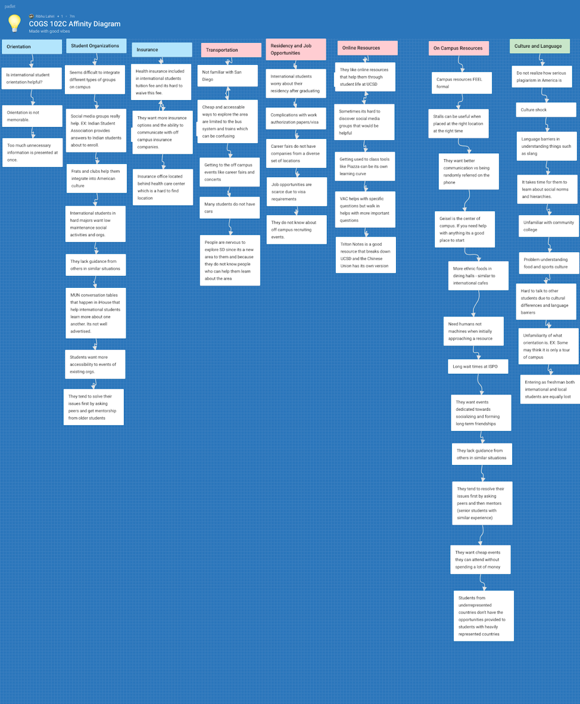
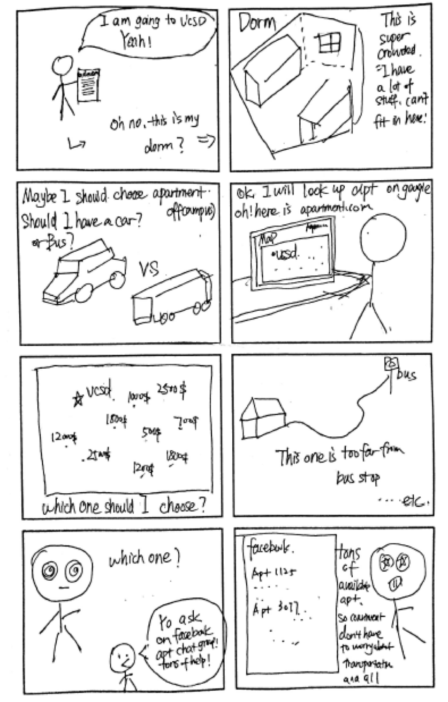

International students exist as a notable subset of UCSD student body who face many obstacles during their time in colleges such as transitioning into higher education, moving to a new country, the legal intricacies involved with work authorization and residency statuses amongst others. Our team’s goal is to work with the international student body, research existing resources along with the level of awareness amongst the international student community of these resources in order to find ways to make UCSD a more quality experience.
UC San Diego HCI Course Final Project
Tools: Figma
Skills: UX research, User Testing, Story Board, Ideation
Timeline: 3 months (January - April 2019)
International students form a large portion of the study body at the University of California, San Diego (UCSD) as they made up 18.2% of the undergraduate student body according to a 2018-2019 student profile report. These students pay high costs in tuition and face several challenges ranging from legal processes to cultural barriers. We decided to help international students have a better experience at UCSD by examining the resources that international students have access to. We also found that by helping international students we can also help other subsets of the general student body. Our research began by looking into the campus resources offered to international students by UCSD in order to assess whether or not they have adequate resources or if additional resources are needed along with how well the resources are known to the international student body.
Primary Stakeholders: International students
We have open access to this population because a lot of students at UCSD are international students. We each also have close friends who are international students who are always available to help. We will also reach out to international student organizations by going to GBM’s and contacting them via social media.
Secondary Stakeholders: Campus Resources
Campus resources such as the international office are happy to help since we will be trying to minimize international student problems.
1. Health Insurance Office
2. ISPO
3. Student Organizations
4. International Students
Going off to college for the first time might seem like a scary thing, especially for international students. Getting used to a new environment can be a big adjustment,
but most colleges have a variety of resources available to help ease this transition,in particular two big communities - International Student & Program Office and Student
Health center.
International Student & Program Office - This is probably the most useful and important office for international students during their four-year college career. Here,
advisors can help international students with issues regarding visa and immigration, and provide them with other useful on-campus resources in other areas. The reason we
choose this site is that those officers are a group of people who are the most familiar with international students communities from the school's perspective. This office
has been followed its mission to enrich the academic, research and cultural experience of international students by advising and supporting the university’s international
community and by collaborating with campus partners. Therefore, We probably can not only know more about other resources that they offered for international students but
also problems that most students are struggling with.
Health Insurance Office - Since insurance is included in international students’ tuition fees and it is really complicated to waive, most students by default. However,
there is not enough information to international students about how their insurance work. So talking to the insurance office and discuss what are the problems they are
having and how international students’ experiences are. These are our primary goal of the research.
Student Organizations - The primary function of each international student association is mostly responsible for helping away-from-home international student in their life,
study, work, and other issues, to bring them together on campus. Those organizations also serve as bridges between students and other communities. By getting in touch with
student organizations, we could actually stand in international students’ perspective to know their experience on campus and other suggestions or wishes.
International students - This is our main stakeholder, therefore its necessary that we always question them about findings we obtain from other resources like organizations
to confirm if the findings are true. This will make sure we are on the right track and not straying away from the context of international students compared to the entire
student body.
Regarding the ISPO, we observed how people interacted within the office, how the wait times where, and how the intake advisors interact with the students, and how quickly
they can provide assistance. Additionally, careful notes were taken during the interview, as well as gaining a contact to help us better understand our design goals.
For Health insurance problems, one of our group members monitored at the entrance of the office for 30mins each in the morning, at noon and in the afternoon. We keep
records of how many students were there and what is the process of having a walk in appointment and reserved appointment.
Goals:Determine the relevance of the person being interviewed, as well as finding out what their organization does in relation to our contextual theme;
Get connected with other stakeholders after interviews;Amass data from interviews to inform future design proposals
Summary:A significant take away from meeting with the ISPO advisors was that the ISPO itself is the starting point, or sometimes even the bridge
to connecting students with other resources on campus. Despite the fact that some of the issues some students bring up with the ISPO, they have had many cases where they
are willing to go beyond to help students out. I even got to observe having to wait much longer to speak with an advisor for the actual interview, because the student’s
case had run into visa complications. I wanted to ask more about how they coordinate and execute their orientation days for incoming students. Although the advisor did not
have specific data or the exact details for how they’ve done orientations, I was connected with the person who is directly in charge of that.
During my conversation with Jay(pseudonym) was that he was not particularly fond of being a part of “high maintenance” organizations such as fraternities due to the
time and social commitments they force upon their members. He preferred more casual organizations such as the Indian Student Association and Sangam SD because they host
events that anyone can attend without being forced. We also discussed the issue of residency and Gupta noted how stressful the job hunt is for international students,
especially non-stem majors. He noted the international career fair that was held during spring quarter and expressed a desire to see more events like that.
The main take away from interview with Jim(pseudonym) was that a lot can be learned by how students are treated in I - house compared to how they are treated in other campus areas.
I - the house is specialized for helping students adapt to America but the same features I - house has cannot be found in other housing areas around campus therefore although
exchange students at I - house are able to adapt easily it's not as easy for full-time international students in dorms and apartments. This can be changed by hosting events on
housing areas for international students for example similar to how I - house has internationally themed food every Friday, the same can be done in other dining halls,
Rahul Sharma(pseudonym) was quite happy with the available campus resources. He talked about how he usually has a clear question in his head when visiting advising or the
ISPO, and he also commented on how he appreciated the efficiency of the following up after the visit. Geisel library and academic advising were his most frequently used
resources. As mentioned by the insurance office, the stalls are not helpful in spreading awareness, but according to Rahul, if placed at the right time and at the right
place, it can be quite helpful. Personally, he once went to an event that helped plan his major out and he learned about it from a stall on library walk.
The most vital findings during an interview with the insurance office that less than enough students know where the insurance office is. Most students don’t even know they
can access the office on campus. As a result, most international students are limited to knowing the insurance can cover injuries or illness only. Even though the office
occasionally have a table on library walk trying to introduce the benefits to students, few people really come and ask. This is mostly because students don’t feel a need
to use the insurance until they have to. This is even more critical to international students because they are new to the country and have zero knowledge of how the
insurance system works here. What we can do to improve this is to create more exposure to the benefits of insurance to more students and advertise how important health
is to college students. If we can draw more attention of the international students to the health insurance, we may be able to spread more information on campus.
Because we our currently scope is problems of all international students, and there are no specific topic that we agree on. We need a model that could help us narrow down the scope. We used the affinity diagram to layout all of our points and grouped things with similarities together into various categories. Doing the affinity diagram helped us visualize which topics had what going on and how some of the topics related to one another. After clustering all the problems, we may be able to find which topic has the most questions, and what are the problems of international students center in. We could also find connections among each cluster and see how one cluster could benefit to the solution of another.
One of the design models we used, to help understand the data we collected, was the Relationship model. International students when faced with a problem tend to go to different sources and identifying how those sources are accessed is essential to us. From our interviews and the affinity diagram, we were able to break down the resources international students access in order of priority. On an initial level, when faced with a problem they usually consult friends, family, apartment/roommates, and RAs (if living on-campus). If their issue is not resolved and they have some idea about what domain the problem’s in, they tend to go to the secondary level of resources, which would be social media groups and student organizations. Finally, if their issue is still unresolved they go to the tertiary level of resources like ISPO, Geisel and even the Student Business Services where they can be directed towards more specific resources where they might be helped. These levels of accessing resources comes from our set of observations and interviews, and they can shed more light on how certain resources might seem more approachable and less formal than others.
The design problem we are trying to solve revolves around international students and how to make resources more readily available and comprehensive to them. We used the human centered design process to discover this problem and also to solve it. We started off by collecting data using contextual inquiries and user interviews and we also used our own experiences as some of the team members were international students. We made sure that we collected data from a variety of students at different years of college. We then evaluated the data we gathered on an affinity diagram to further narrow down the problem. After finally identifying the problem we started to ideate. We ideated around the personas and significant needs and pain points we had identified.
Our ideation process consisted of three stages. We first started off by laying out ideas with no constraints. We then drew took out common themes from all these ideas and
finally we filtered them in terms of feasibility. We also then voted on the top 3 ideas and the following are what we chose in order of most promise to least promise
1. Collaborative online document
A collaborative online document in the form of a google doc (or something similar) that provides a common platform for current students to share their experiences and also
doubles up as a common starting point for new students to address doubts that might be resolved through it. The document would be formatted into Broad categories and then
into smaller categories (as needed). The Broad categories can have a hyperlinked index page for easy access. In the smallest categories, the format will be like a FAQ,
with a Question being asked by a new student which is answered by a current student, or if a senior has some insight they can format it this way as someone in the future
may have a similar query. The document will be moderated by volunteers working in a large campus resource center, maybe the admissions office or the ISPO, which can help
remove redundant queries or students trying to mess around.
2. Social Media Page/Forum Page
The forum/social media page will be like Reddit consisting of people posting questions and even tutorials that can stick to the top or put in a special section.
Every topic, for example, class scheduling, academic, housing, transportation, the residency will be divided into different categories that people can access as
they will. This social media/forum page allows international students to access information on campus even when they are not physically at school or before the
quarter starts. They can have 24/7 help all around the year independent of on-campus services that only open for certain hours. Besides, since the forum consists
of people, the problem-solving variety will be big. Just like StackOverflow, it is possible for people to solve or find all kinds of questions easily here.
3. Specialized Service
During our ideation process, another common theme that came up was a specialized service such as an information desk at Geisel that acts like a central directory that
directs you to the best place for you to find answers to the problem you asked , a triton rides terminal that had triton rides on standby for students to use on a
first come first serve basis , a compulsory seminar or class that students have to take before the third year that tells them about opt and how to get internships
and finally a counselor that contact you each quarter or each year to see how you are doing and guide you through your years in college. Two of the solutions within
the specialized service that we found that would be very useful were using the TritonRides for other things besides just a ride share service and a mandatory information
seminar series for international students. TritonRides only operates within certain hours therefore when its not in use it can be used to help teach international students
how to drive or it can be as a central location that takes students to different places based on a first come first serve basis or it can be take students to off campus
events like career fairs. Another service we found could help is a series of mandatory 1 - 2 unit seminars that takes students through different important areas such as
insurance , how to get internships and how to use OPT.
A lot of international students have never been to UCSD campus before school officially starts. So when they are accepted by UCSD, if they want to live off campus. They have very limited source of how to do apartment hunting. Because they don’t know how the neighbourhood looks like, how far the apartments are from campus, and how difficult to find transportation from where they live to campus. It is almost impossible for them to find the best apartment. This is even harder because they are living a totally different country and they have the least sense of how American leasing systems works. Since they are not physically here, they can’t sign up with leasing offices directly. It is going to be even harder for them to find a roommate that is in best interest with them.So if we have a group or facebook page where people look for roommates and rent their own apartments. It will be easier for international students to look for apartments and roommates.
We are going to start by listing out all of the key features that our solution will have and then moving onto the prototyping process. In our case, our initial solution is going to be a series of Google documents that help international students easily access various sources of information. Some key features, in this case, would be having simple, comprehensible documents that direct students to the relevant resources that document’s topic is on. Once we start offering multiple help documents, we would need a central “Table of contents” document that links to each of the documents. Based on this solution we will start prototyping by making a paper prototype and assessing how students respond to it. After we have done and tested paper prototypes we would test user higher fidelity prototypes by making an actual google document based on the paper prototyping feedback. We chose this design because online resources are easy to access by students 24/7 without having to go to campus offices. This will not only benefit the incoming students who are not physically in San Diego, but also students already here who have problems and want immediate/quicker answer. It will also be more integrated and thorough than resources on campus because they are all in one website and students don’t have to search hard for the content they need.
One of the things we wanted to focus on our prototyping tests was a google document that acts as a table of contents. We did tests with two phases. In the first phase, we tested “which one is better, document with everything in it or document with links to external sources”. In the second phase, we tested on documents in mother language vs document in English. The point is to see what modification should we add to the current google doc format to make it more easily accessible and more comprehensive to international students. In phase one, the reason is that we find that integrating all information in one google doc makes it too long to read and creates more lag when more people are using it. Plus, it is even harder to maintain information on that page. So we thought of using the google doc as a transition platform to collect links of resources from all UCSD and external websites. In this way, information is accessed indirectly but the efficiency of looking for information in google documents should be improved in hypothesis. In phase two, we will test whether English or their mother language is easier to comprehend. Because the input information international students receive is English, it is a debate on whether they will use their mother language to look up information or will they use English because they don’t have to translate? There are definitely more results in English if they look up on google, but it is a question if it is easier to comprehend.
For our first prototyping phase we wanted to identify if its better if the google doc is just a pointer source which means when you use it, it redirects you to a website or
other source of information that will help you solve your problem OR if the google doc contains all the information in of itself.
How did we test this?
We gave international students a task to complete which requires information from the google docs we created. One google doc contains the information in the google doc of
itself (Everything) and the other google doc points you to the information(Pointer). We compared how people performed on the task.
Tests:
Since we wanted to scope our prototypes to initially employment and housing issues to test and then scale based on feedback. Given the document, the tests were simple,
to find out specific pieces of information such as the length of an OPT extension, the limit number of hours an international student can work on campus employed on campus a week.
Task:
Google Form with questions:
Feedback:
From our tests it seemed like the pointer resource did a lot better than when it had everything.
Result:
The pointer resource did a lot better than the resource that had everything in it. People found the pointer to be much more helpful than the resource with everything and
people also scored a lot better in the tasks.
Our next prototyping phase involved trying to figure out if the information is more comprehensive in the mother tongue of the reader or if all the information is in English.
How did we test this?
Similar to the last task. We gave international students a task to complete and two different google docs. One was translated into their mother tongue and the other one was
in english. We compared people performed in the task.
Tests:
We will be testing if the participants know the rules before and after signing the lease, for example if they should enclose personal information to the landlord, if
they should pay rent before they officially sign the lease and so on. The information will be included in the document for the participant to look up.
Task:
Google Form with questions:
Feedback:
People considered the resource in their native language to be more helpful than the one written in English. However, people who took the English survey did better on the
questions.
Result:
On average, Mother Tongue version did better. People found native language to be more comprehensive and easy to look for information.
From Phase 1 we learnt that having the information to point can actually have a lot of benefits. One significant advantage of the pointer is that it takes you to the most
updated info. Also having information like pointer resources reduces the amount of information for the reader which makes it easier to parse through. The pointer resource
also reduces the amount of information the moderators have to go through. Moreover having the pointer resource
From Phase 2 we learnt that having the information presented in a specific language based on a target audience will make the document more helpful then a blanket one
in English. This is due to people being more comfortable with the information being presented in the language they have more experience with.
There are many things that can be done to improve life for the international student population. Our team did extensive research into the residency and job hunt struggles
that international students face. The findings indicated that international students wish they had an easier time finding internships and full time positions. We explored
two potential solutions in the form of virtual career fairs and international career fairs, but contact was lost with representatives from the career services center and
we were forced to pivot to a more attainable informational resource due to time constraints. However, virtual or international career fairs could be something to explore
as potential solutions in the future.
In the context of our current solution to increase awareness and access to information we chose to focus on an English series of google documents based on prototyping
feedback that indicated people learned more from an English version of the resource. Survey feedback did also indicate that people prefer seeing the information in their
native language so we would like to expand upon our solution in the future by offering the resource in various different languages.